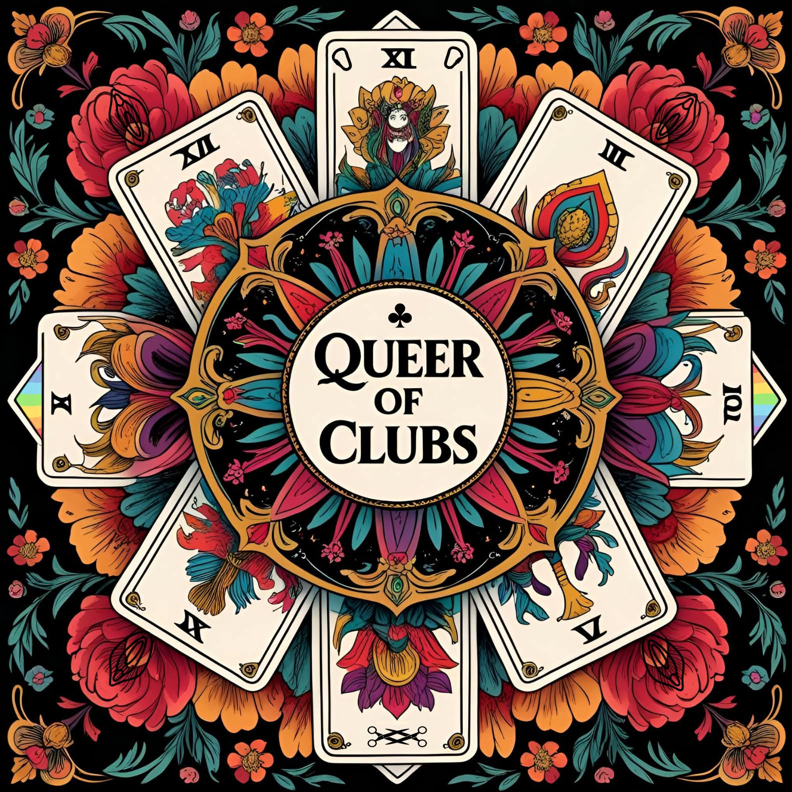
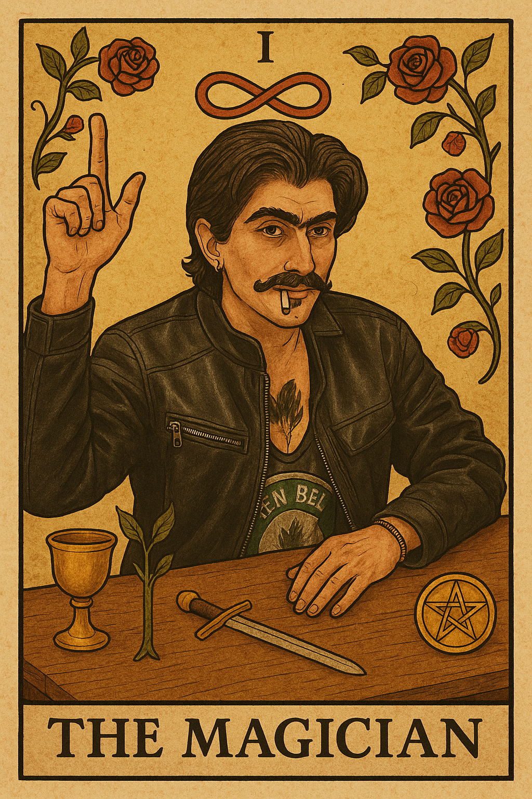
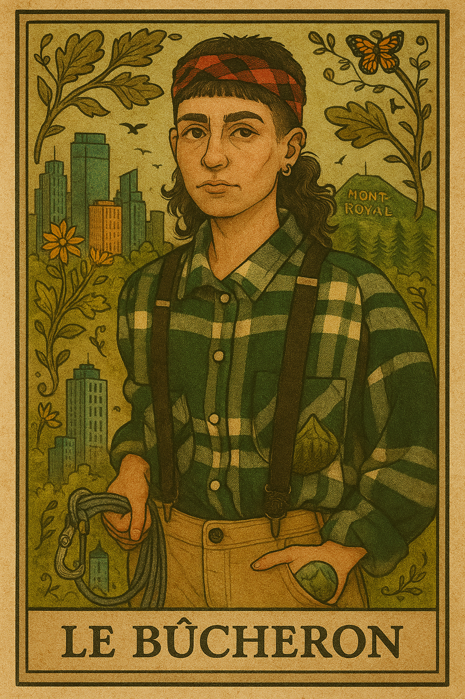

Queer of Clubs did not always have this name. It began as casual evenings among friends playing cards. What connected us was our belonging to the LGBTQIA2SP+ community and our love of games. Gradually, the evenings became regular and more and more people wanted to join. One day, on the way home from a drag king show, we decided to try the art form ourselves. After a while, we chose to formalize the club. Created in a context of growing anti-LGBTQ+ rhetoric, notably illustrated by controversies around Drag Story Hour, the project aims to create a space for meeting, solidarity and freedom of expression. We use play and experimentation as ways to celebrate queer identities and build collective resistance.
Project
Queer of Clubs
Queer card-game club

Type
Project
Period
2024–present
Role
Co-founder
Location
Montréal
About
Next steps and developments
Queer of Clubs has been somewhat on pause recently. We would like to relaunch and revitalize it, potentially by adding other activities. We have already organized a queer pop-up thrift shop and a queer oil-wrestling event. Another project I would like to develop is a tarot deck featuring photographs of queer people from the Montréal community. We’ll see!!
Photos

Player card
